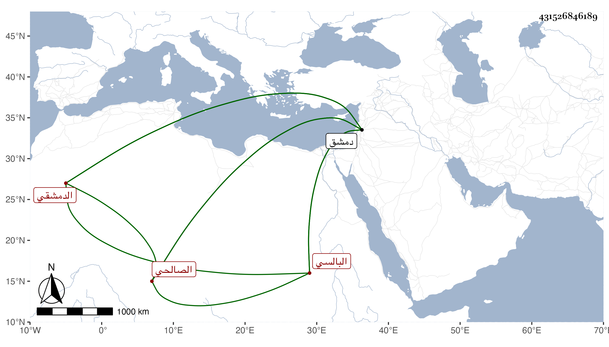

0902Sakhawi.DawLamic.ITO20230111-ara1.EIS1600.431526846189
Biography ID: 431526846189
683
محمد بن محمد بن محمد بن عمر بن أبي بكر بن قوام بن علي بن قوام البدر ابن أبي عبد الله بن الإمام أبي عبد الله بن أبي حفص ابن القدوة أبي بكر البالسي الأصل الدمشقي الصالحي ويعرف بابن قوام . ولد في تاسع عشر جمادى الأولى سنة إحدى وعشرين وسبعمائة وسمع علي الحجار وإسحق بن يحيى الأمدي والمزي وابن المهندس والنجمين ابن هلال والعسقلاني وعبد القادر بن عبد العزيز الأيوبي وزينب ابنة ابن الخباز ذكره شيخنا في معجمه فقال : الشيخ المسند الكبير لقيته بزاوية جده في صالحية دمشق وكان خيرا فاضلا من بيت كبير حصل له في سمعه ثقل فقرأ عليه كلمة كلمة كالأذان وكنا نتحقق تسميعه تارة بصلاته على النبي صلى الله عليه وسلم وتارة بترضيه على الصحابة ونحو ذلك وكان تفرد برواية الموطأ لأبي مصعب بالسماع المتصل مع العلو فقرأناه وغيره عليه وأصيب في الكائنة العظمى بدمشق فاحترق في شعبان سنة ثلاث رحمه الله . قلت روى لنا عنه بالسماع سوى شيخنا جماعة وآخر من يروى عنه بالإجازة حفيد الجمال يوسف العجمي وهو في عقود المقريزي وأسقط من نسبه محمدا على جاري أكثر عوائده .
